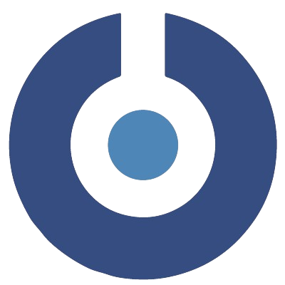

My Internships and Professional Experience

2025/02 – 2025/06
Deep Learning Intern
@ EXYPNOS, Sfax, Tunisia
Technologies: TensorFlow Lite , Python , Google ML kit , Flutter, OpenCV.
Key Achievements:
- Developed a mobile app providing real-time face analysis assistance for blind and visually impaired users.
- Integrated five deep learning models: face detection and recognition, age and gender estimation, and emotion detection.
- Implemented real-time text-to-speech output to deliver face analysis results audibly.
Computer Vision Intern
@ SMARTVISOR, Sfax, Tunisia
Technologies: YOLOv8, Streamlit, Python, CVAT, CUDA.
Key Achievements:
- Developed an object detection model using YOLOv8 to identify and assess product defects.
- Pinpointed specific issues responsible for the defects.
- Created a user-friendly computer vision interface with Streamlit for visualization and interaction with the model's results.